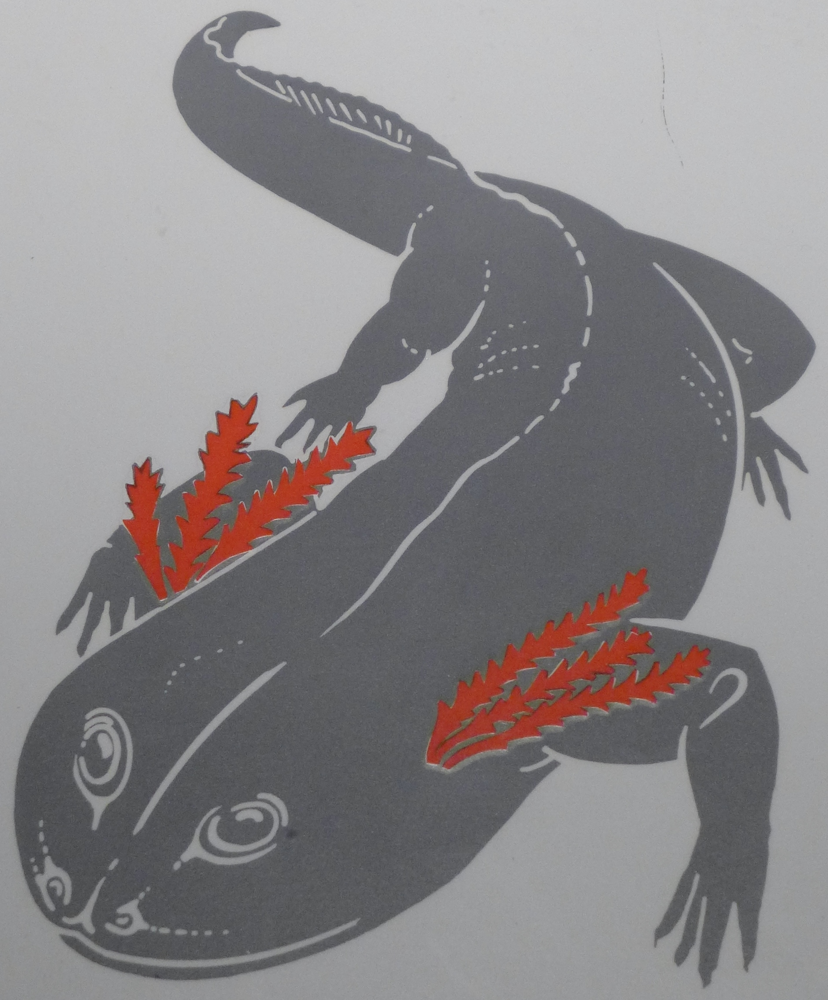

樹蜥螈
從水中登上陸地可能是脊椎動物演化的里程碑。然而，我們對於這一段的演化過程卻所知不多。幸好有關古代兩棲類的新發現才讓我們有進一步的瞭解。

這是樹蜥螈的化石複製品，也是我們所知最完整最古老的陸生兩棲類的骨骼。 再發現它之前，只從化石碎片中得知樹蜥螈的存在。 其近親魚石蝝還是魚的模樣，而化石顯示樹蜥螈具有發育完全的四肢，已能適應陸地的生活。
在沼澤森林形成之前，樹蜥螈是棲於溫泉旁邊的兩棲類之一。 牠們以陸上的小無脊堆動物為食，例如蠍子、蜘蛛和蜈蚣等。
西蒙螈

西蒙螈乃介於兩棲類與爬蟲類的一種動物。它兼具此兩種動物的特徵。 兩棲類與爬蟲類主要的不同在於它門所產的卵，兩棲類必須把卵產在水中，爬蟲類則能產生有殼的卵。
我們並沒有直接的證據告訴我們西蒙螈產的是哪一種卵，但有一種近似西蒙螈的幼體曾被發現， 它們長相如蝌蚪並有鰓，因此很可能它們是在水中產卵。
西蒙螈為何不是爬蟲類的祖先？
西蒙螈比最早的爬蟲類稍晚出現，所以不可能是爬蟲類的祖先。
盤蜥螈
如果盤蜥螈是出來的古老兩棲類，那還又什麼是牠的近親？
盤蜥螈的化石
距今兩億七千萬年前
這具盤蜥螈化石已有二億七千萬年之久，它屬於後來演化成爬蟲類的古老兩棲類之一。 它與較大的西蠓螈是近親。